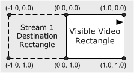

[The feature associated with this page, DirectShow, is a legacy feature. It has been superseded by MediaPlayer, IMFMediaEngine, and Audio/Video Capture in Media Foundation. Those features have been optimized for Windows 10 and Windows 11. Microsoft strongly recommends that new code use MediaPlayer, IMFMediaEngine and Audio/Video Capture in Media Foundation instead of DirectShow, when possible. Microsoft suggests that existing code that uses the legacy APIs be rewritten to use the new APIs if possible.]
When the VMR mixes multiple input streams, it positions each stream within a normalized rectangle, called "composition space." Within composition space, the coordinates (0.0, 0.0) to (1.0, 1.0) form the visible video rectangle. Any coordinates that fall outside of this rectangle are clipped.
An application can perform special effects with moving, stretching, and shrinking the video from an input stream, by changing the destination rectangle in composition space for that stream. If the specified rectangle is a different size than the native video rectangle, the native video will be shrunk or stretched to fit. The destination rectangle is specified by calling the IVMRMixerControl::SetOutputRect method.
For example, assume that stream 0 (which corresponds to pin 0) contains the main video stream, and stream 1 (which corresponds to pin 1) contains a secondary video. Stream 1 can be positioned completely offscreen by specifying a normalized rectangle of { -1.0f, 0.0f, 0.0f, 1.0f }. Stream 1 can then be moved into the visible area by modifying the left and right sides of the rectangle on successive calls to SetOutputRect:
| Label | Value |
|---|---|
| Time | Rectangle |
| t + 0 | { -1.0f, 0.0f, 0.0f, 1.0f } |
| t + 1 | { -0.9f, 0.0f, 0.1f, 1.0f } |
| t + 2 | { -0.8f, 0.0f, 0.2f, 1.0f } |
| ... | ... |
| t + 10 | { 0.0f, 0.0f, 1.0f, 1.0f } |
Â

At time t+10, the video from stream 1 is completely visible. In this example, the native size of stream 1 was maintained while it was moving. You could also stretch or shrink the rectangle to produce interesting effects. You can also flip the video vertically, by specifying a greater value for the top than the bottom, or mirror the video horizontally, by specifying a greater value for the left than the right.
Â
Â